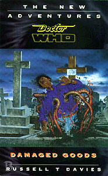

|
Damaged Goods
|
BASIC PLOT DOCTOR COMPANIONS MATERIALISATION CIRCUIT Pg 32 The TARDIS has been parked in Times Square. New York, July 25th, 1987. Pg 35 It rematerialises the same day in Angel Square, close to the Quadrant. Pg 102 The Doctor hides it a picosecond in the future so nothing happens to it. Pg 256 The Doctor takes it to Columbia 1983, to check on the N-Form activation signals. The TARDIS then materializes Christmas Eve, 1977 to set up the time loop. Pg 258 We don't see it happen but the eighth Doctor lands in 1963. PREPARATORY READING It's more overtly a sequel to State of Decay, so basic familiarity with that story is a must. References to the Vampire Wars are rife, and I haven't noted all of them. CONTINUITY REFERENCES Pg 30 "The Doctor had brought them to New York, telling Roz that it was time she saw the high-rise future she had only glimpsed in the Woodwicke of 1799." Christmas on a Rational Planet. "He claimed that it would remind both his companions of Spaceport Five." A reference to Roz and Chris's home, back in Original Sin. Pg 30-31 "He speculated to Roz that these events had been instigated by his own curiosity, starting with Ricky McIlveen or the investigation of Yemaya 4 - or perhaps earlier, the Doctor had muttered, telling Roz about a fatal experiment on a Professor Clegg, long ago. [...] But their confrontation with the Brotherhood had ended the circularity and set the Doctor's mind at rest." A fast summary of recent events in the Psi-Powers arc: Warchild, SLEEPY, a namecheck for Planet of the Spiders, and The Death of Art. Pg 31 "He hinted that, round about now, a virus from the Heliotrope Galaxy was maturing in the city's sewer system." Considering the importance of the Patrexes later on in the story, the name is probably deliberate. Deadly Assassin explains that heliotrope is the chapter's colour. Pg 39 "'Sometimes I think you've been travelling with me too long, Roslyn Forrester, you've learnt all my tricks. Benny would have left me alone by now.'" Beloved companion Bernice Summerfield, last seen in Return of the Living Dad. "Chris asked about the power of a Time Lord's nose, but the Doctor ignored him." Just in case you thought it was only the name Tyler that Davies reused for the Eccleston stories. Pg 40 "I remember once, Miss David had ideograms woven into a carpet." Warhead. Pg 41 "'Like warlock,' interrupted Roz." Warlock, naturally enough. Pg 48 "Only the Doctor remained oblivious to the heat, striding along in his jacket and jumper as though sweat were an impossible thing." Resistance to weather conditions seems to be a Time Lord characteristic. This particular reference is probably inspired by all the scenes in Survival in which the Doctor cheerfully wanders around a desert planet in long-sleeved shirt, jacket and pullover. Pg 52 "Compared to her family's kraal on Io's Kibero Patera, this was a hovel, but compared to the dwellings of Spaceport Five, not too bad at all." Original Sin again. Pg 53 "No doubt Mr Constantino had been busy filling in his coupon when a little man in a battered hat had sidled up and whispered some different numbers." The Doctor pulls the same trick in School Reunion, although it's funnier there. Pg 55 "Chris had always had the impression that the Doctor told Roz everything, more than he ever told Chris or even Benny." This was first mentioned in Zamper (p214). You probably know who Benny is. Pg 56 "But I'd find it easier to gain access to the court of Rassilon himself, than to step over Winnie Tyler's front door." Rassilon is from The Five Doctors and various etcetera. The rather nice speech at this point is a Seventh Doctor version of the later and terser "I don't do domestic." Pg 63 Yet another reference to Spaceport Five (Original Sin). Pg 68 "'Somewhere in the universe, the tea's getting cold,' said the Doctor. 'I try to remind myself of that whenever things get too bad.' 'Then you must drink a lot of tea." Dry misquote of the Doctor's closing speech in Survival. Pg 74 "Things became even more cryptic when David had claimed to recognize one of the firemen - apparently, this man was a friend of Dorothy and Chris looked around the walkway, wondering if Dorothy was one of his neighbours, or if Ace had appeared." Ace did show up in the last book, The Death of Art, so this isn't as odd as it sounds. Pg 75 Mention of the TARDIS translation circuits. (The Masque of Mandragora) Reference to the Adjudicators (Colony in Space, Original Sin et al). Pg 77 "'Wicked?' snorted Carl. 'Where've you been, grandad? No one says wicked any more.' 'Really?' said the Doctor, crestfallen.'In 1987...? I could have sworn they did." A reference to Ace and the production staff's somewhat unfortunate attempts to give her slangy dialogue in 1987. Pg 79 "When we lived in 1941, it was a different world." Roz and the Doctor are comparing Britain in the 80s to the one they experienced in the 40s during the course of Just War. Roz specifically remembers George Reed from that novel, and he's mentioned a few more times. Pg 80 "Chris interrupted, repeating what the Doctor had taught him about Ricky McIlveen." Warlock. There's also a reference to that novel's emphasis on "alpha male" psychoanalysis. Pg 82 The Doctor describes Gabriel's talent as a "Glamour," a term used precisely the same way in Neil Gaiman's Sandman. The early 80s BBC miniseries "Ways of Seeing" described the phenomenon with the same terminology, so it's likely both Davies and Gaiman are borrowing from the same source here. Pg 95 "There were children on Yemaya 4, and Dione-Kisumu didn't care." SLEEPY. Pg 96 "Tribophysics." Apparently, Davies has been playing around with this particular bit of technobabble since long before it showed up in the extrapolator from Boom Town. Pg 101 "The fact that the reactivation signal had been sent meant that the War was still being waged [...] The Enemy must have faked entry codes to transfer the intelligence to the Homeworld." For whatever reason, a lot of the language Davies uses to talk about the Vampire Wars sounds a lot like the War in Lawrence Miles' material. There's no explicit linkage, however. Pg 112 "He had muttered that the ship had been displaced a picosecond ahead as a safety routine." A trick both Davies and the Doctor will reuse in The End of Time. Pg 114 "With a bit of luck and a bit of timing, there'd be a nice big bang to round things off just before tea. Happy days. Maybe stupid days. Maybe both." Perhaps the nicest description of the Pertwee era you will ever see, and the start of a continuity checklist. Pg 115 "But as exiles go, it wasn't too bad. No, not too bad at all." Not sure why we needed another Pertwee reminder, but here it is. "It's more than likely George Reed is still alive." Just War again. "I once built a weapon in Shoreditch which could fry a Dalek at fifty paces - well, ten paces." Remembrance of the Daleks. "First of all the time ripple detector in Little Caldwell, now this." Return of the Living Dad. Pg 116 "The Osirans certainly used tribophysics, but what's happening here is a little too crude for them." Pyramids of Mars. But see Continuity Cock-Ups. Pg 122 "The Voice was cruel, mimicking the cry she longed to hear. Mu mmy Mu mmy Mu mmy." An extremely neat inverse of The Empty Child, though I don't know if either Davies or Moffat consciously noticed. Pg 138 "With a sarcastic smile, knowing such things would be outside the Doctor's knowledge, she said, 'He looked like Neil Tennant.'" One wonders if the Doctor has heard of a Scottish actor named David who borrowed his surname from the Pet Shop Boys and presumably went on to star in the rebooted Professor X. One of few pop culture references to actually become funnier over time. Pg 147 "We forget because we must." This line will recur in Love & Monsters. Pg 153 "Chris's teeth were a bit strange, almost pointed" Original Sin. Pg 157-158 "We saw in Paris how psi-talents can induce physical metamorphosis." The Death of Art. Pg 160 "That makes us part of a Brotherhood, wouldn't you say?" Calling card to the overarching story of the Psi-Powers arc. Pg 161 "The Brotherhood still exists, and if I thought it benign, then I'm a fool." Again, the Psi-Power Arc villains. Pg 181 "It strikes me, Roz, that Gabriel Tyler has been draining his brother's life force. Like a vampire." Like the ones in State of Decay, as will later become obvious. Pg 187 "One day, Roz, you'll look back on this as the good times." Davies can only have meant this ironically, considering what happens to her in the next book. Pg 188 "'Sewers again,' muttered Chris." The Death of Art. Pg 189 "She remembered a time long ago in the future when her sister's child, Gugwani, had been stricken with Monroe's Cachexia." Gugwani will later appear in So Vile a Sin. Pg 193 "The Doctor knew that these arrivals bore the UNIT insignia." We all know what UNIT is, right? Pg 195 "And fleets of Bowships riding the ion reefs." Again, State of Decay. Pg 197 "The Patrexian Numbers." The Doctor explains very quickly that the Capper is being maintained by Gallifreyan tech, specifically from the Patrexian chapter. Pg 199 "Prydonians might be devious, but at least we're honest about it." The Doctor first mentions being a Prydonian in Deadly Assassin. "Given the stories Benny had told, it occurred to Chris that whenever the Time Lords had a spring-clean, they threw their rubbish out into the universe for others to deal with." It isn't really clear which of many adventures Benny might have mentioned, although The Pit and Blood Harvest come to mind when talking about Gallifreyan superweapons. "It's through such a breach that the Vampires swarmed in the first place." Fast summary of the backstory for State of Decay. Pg 201 "The Brotherhood didn't take kindly to failure, and their oaths told dark stories of le Docteur." The Death of Art. Pg 204 "The Vampire was a life form from a dark universe, perhaps a distillation of our nightmares from N-Space itself - the fear of our own blood." The Ghosts of N-Space, and see Continuity Cock-ups. Pg 205 "The Time of Legend, the Great Tapestry depicting the Eternal Wars. Bowships banausic in shape did sail into battle, manned by the Academies of Prydon and Arcalia." We finally get a thorough description of the Vampire Wars from State of Decay. Pg 206 "The Doctor recorded his own fight against the last of the Vampires in E-Space, with the Lady Romana, and his later pursuit of the Vampire inheritance to Earth and Gallifrey." State of Decay, Blood Harvest and Goth Opera respectively. Pg 207 Reference to Ace and Jo. Pg 208 "There's a possible Haemovoric evolution in the future, but that's no danger, it'll just feed on itself and lead to extinction - I know, I've seen it." Curse of Fenric, although Davies carefully leaves it open whether or not said future actually occurs. Pgs 207-208 "If the War is over and the War is won, how come the signal to reactivate comes from the future?" A good question that's answered in So Vile a Sin. Pg 230 "Her name was Judy Summerfield and she wanted a curry." The absolute implication is that this is one of Bernice's ancestors. Pg 243 "Then he focused on a mental chant of Old Gallifreyan which few Time Lords would dare to use, and the engram came under his control." Presumably Old High Gallifreyan, if it's so dangerous (The Five Doctors). Pg 246 "Then for a second, she touched his mind again, and added slyly, 'No. You would make a terrible father.'" Rather like the Doctor's name in The Girl in The Fireplace; the author is definitely hinting at something that is ambiguous and meant to remain that way. Alternatively, Davies is just playing up his theme of the Doctor and domesticity again. Pg 247 "The entire planet could fall into the void." The similarity to the description of the Void in Doomsday is almost too obvious to bother mentioning. Pg 256 "'We'll see,' said the Doctor. 'Time will tell.' 'Bollocks,' said Roz." Another sarcastic misquote, this time from the ending of Remembrance of the Daleks. "Roz and Chris were going home." Set up for the next adventure, So Vile a Sin. "The TARDIS indicated that an N-form had been destroyer of the first Quoth homeworld." The Death of Art. Pg 257 "In the far corner, a man with wavy hair and a silk cravat is deep in thought." Very likely the Eighth Doctor, in his first post-Telemovie appearance; the description is right. Pg 261 "The remains of Eva Jericho's body tissue are to be preserved at Porton Down." Mentioned as somewhere very hush hush in Mawdryn Undead. Pg 262 "Jacob Tyler left his wife in June 1977." Presumably around the time of Image of the Fendahl, where he was known as Jack. OLD FRIENDS AND OLD ENEMIES Harry Sullivan gets a cameo memo on page 261. NEW FRIENDS AND NEW ENEMIES James Greco also escapes and is still on the run in 1999.
CONTINUITY COCK-UPS PLUGGING THE HOLES [Fan-wank theorizing of how to fix continuity cock-ups] FEATURED ALIEN RACES FEATURED LOCATIONS Pg 8 London in the Summer of 1987 is where most of the action takes place. Pg 28 New York, July 25, 1977. Pg 256 Columbia, 1983 London, Christmas Eve, 1977 again. IN SUMMARY - Dorothy Ail |
|
 |